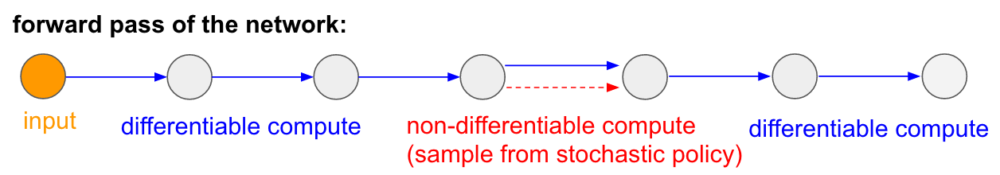
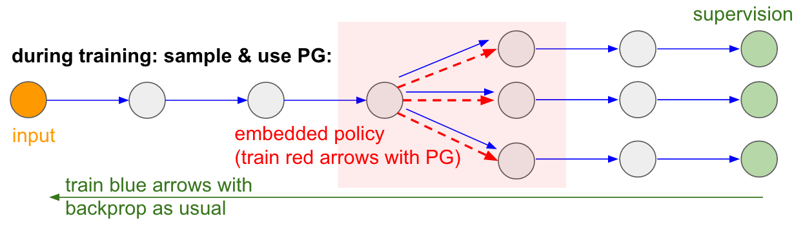

“we developed a novel agent, a deep Q-network (DQN), which is able to combine reinforcement learning with a class of artificial neural network known as deep neural networks.”
Problems for RL and Deep Neural Networks
Reinforcement learning is known to be unstable when a nonlinear function approximator such as a neural network is used to represent the action-value function.
This instability has several causes:
the correlations present in the sequence of observations,
the fact that small updates to \(Q\) may significantly change the policy and therefore change the data distribution,
and the correlations between the action-values and the target values
Key Ideas for DQN: 1. Experience Replay
“First, we used a biologically inspired mechanism termed experience replay that randomizes over the data, thereby removing correlations in the observation sequence and smoothing over changes in the data distribution.”
All episode steps \(e_t = (S_t, A_t, R_t, S_{t+1})\) are collected in one replay memory.
During Q-learning updates: sample steps are drawn randomly from the replay memory.
Experience replay
improves data efficiency,
removes correlations in the observation sequences,
and smooths over changes in the data distribution
Key Ideas for DQN: 2. Stabilize Bootstrapping
“Second, we used an iterative update that adjusts the action-values (Q) towards target values that are only periodically updated, thereby reducing correlations with the target.”
Periodically Updated Target:
Q is optimized towards target values that are only periodically updated.
The Q network is cloned and kept frozen as the optimization target every \(C\) steps (\(C\) is a hyperparameter).
This modification makes the training more stable as it overcomes the short-term oscillations.
Deep Q Network Overview
3-dimensional state space (blue) and 2 actions (red); green nodes represent a NN.
Left: naive approach that takes multiple forward passes to find the argmax action. Right: more efficient approach, \(Q(s,a)\) computation is effectively shared among the neurons in the network.
DQN Example: Puckworld
Example Game: Space Invaders
Learning over Time
Example: Learning in Breakout
Example: Learning in Breakout 2
Results - “Superhuman” Performance
Summary
“Our DQN method outperforms the best existing reinforcement learning methods on 43 [out of 49] of the games without incorporating any of the additional prior knowledge about Atari 2600 games used by other approaches.”
Policy Gradient
Don’t approximate a value-based function.
Goal: Instead, directly learn the policy with a parametrized function \(\pi(a \vert s; \theta)\).
Policy Gradient Theorem
Problem: we want to estimate a (reward) function \(f\) and optimize over this using gradient ascent. How can we estimate the gradient?
\[\begin{align*}
\nabla_{\theta} E_x[f(x)] &= \nabla_{\theta} \sum_x p(x) f(x) & \text{definition of expectation} \\
& = \sum_x \nabla_{\theta} p(x) f(x) & \text{swap sum and gradient} \\
& = \sum_x p(x) \frac{\nabla_{\theta} p(x)}{p(x)} f(x) & \text{both multiply and divide by } p(x) \\
& = \sum_x p(x) \nabla_{\theta} \log p(x) f(x) & \text{use the fact that } \nabla_{\theta} \log(z) = \frac{1}{z} \nabla_{\theta} z \\
& = E_x[f(x) \nabla_{\theta} \log p(x) ] & \text{definition of expectation}
\end{align*}\]
\(p(x) = p(a \mid \text{Image})\) will be our policy - note: gradient comes from policy.
Backpropagation of Gradient Information
Problem: stochastic sampling (select an action) is non-differentiable

Solution for ‘red’ parameters: update independently using policy gradients
= encouraging samples that led to low loss.

Recap - Attention Mechanisms in NN
A goal is to learn this as well: Attend to which part of the context?
For example, a RNN can attend over the output of another RNN. At every time step, it focuses on different positions in the other RNN.
In order to learn to attend, attention has to be differentiable.
Policy Gradient Training
For comparison: Training of a NN using supervised learning:
Training a policy network in reinforcement learning:
Comparison: Advantages of Methods
Value-based Methods
Simple – can be realized as tables, still convergence guarantees.
Efficiency and Speed – bootstraping speeds up learning
Policy Gradient Methods
Applicable in large and continuous action spaces
Employ stochastic policies
Further considerations:
Do you want to access directly a value, e.g. for other methods?
The state representation of the problem might lends itself more easily to either a value function or a policy function.
Actor-Critic Method
Combination of both methods is widely used in Actor-Critic approaches – learning both:
an actor policy allowing to use Policy Gradients and
a value-based function that allows to do the updates during each timestep using bootstrapping.
Problems for Deep Reinforcement Learning
Drawbacks of DQN (and other DRL methods)
Delayed Rewards (makes Credit Assignment even more difficult)
Overfitting towards a specific niche and showing no generalization
many real world scenarios are non-Markovian or non-stationary (e.g. when other agents are co-adapting)
Delayed Rewards
“games demanding more temporally extended planning strategies still constitute a major challenge for all existing agents including DQN (for example, Montezuma’s Revenge)”
It’s difficult to explore large state spaces with sparse and delayed rewards.
An Objective Function might not provide good guidance where to continue exploration.
Evolutionary Robotics Perspective
Landscapes induced by objective functions are often deceptive – the objective function is misleading
Often, stepping stones are required — initially, objective might get worse.
Dealing with Delayed Rewards
“When the environment provides delayed rewards, we adopt a strategy to first learn ways to achieve intrinsically generated goals, and subsequently learn an optimal policy to chain them together.”
Approach
Use a hierarchical representation.
Exploration: Driven by a search for novelty (Intrinsic Motivation). This tries to cover all possible behaviors during exploration, find stepping stones.
Intrinsic Motivation - Constructing a Representation
Early Learning Phase
Select key as (sub)goal – but fails.
Intermediate Phase
Select ladder successful as goal.
Intrinsic Motivation - Constructing an Abstraction
Intermediate Phase
Select ladder successful as goal.
Intermediate Phase
Select key successful as goal.
Learning with Intrinsic Motivation
Problematic: Markov Assumption
In many real world scenarios the Markov Property does not hold.
In ATARI games: many require information on direction of movement.
Simple Solution: add information from different time steps – as an input 4 frames were used.
But difficult in non-stationary environments
in game like scenarios, opponents can use different strategies (rock-paper-scissor),
or other agents co-adapt and learn over time as well.
Dealing with Non-Stationarity
Goal: allow that the response of the environment is changing over time (learning or switching to a different strategy).
Approach: Maintain multiple strategies and avoid catastrophic forgetting (either through hierarchical approach or evolving strategies).
Evolve multiple strategies
Problem of Overfitting
Reinforcement Learning only considers what is captured in the reward function.
It wants to exploit uncovered rewards – this can lead to unwanted results.
Dependency on Reward Functions
A sparse reward
… only gives reward at the goal state.
But this is difficult to find through exploration.
A Shaped Reward
… gives increasing reward in states that are closer to the end goal.
Shaped rewards are often easier to learn, because they provide continuously positive feedback.
Unfortunately, shaped rewards can bias learning. For example, exploiting rewarding states.
Construction of a Reward Function
Learns steadily …
… but can end up in minimia
Setting up Rewards in DRL
Reward Shaping puts the burden on the human designer and can lead to unwanted results.
Possible Approaches:
Learning from demonstrations (e.g. a reward function).
Incorporate human feedback by evaluating the quality of episodes or through shared control.
Use transfer learning: train on similar games in order to infer a “common sense” reward function for this game.
Vision of Transfer Learning
Curriculum Learning
“Humans and animals learn much better when the examples are not randomly presented but organized in a meaningful order which illustrates gradually more concepts, and gradually more complex ones. Here, we formalize such training strategies in the context of machine learning, and call them ‘curriculum learning’.”
Deep Reinforcement Learning and Robotics
Many of the mentioned problems are even more severe when dealing with real robots instead of simulation.
There are many (additional) sources for noise and disturbances:
stemming from sensors, for example drift
or motors, for example wearing of
and there are many more factores changing over time.
One particular problem: this spans different time scales which is hard to learn.
Sim2Real is therefore one important field in DRL – trying to initially train in simulation and only later refine on a real robot.
References
Arulkumaran, Kai, Marc P. Deisenroth, Miles Brundage, and Anil A. Bharath. 2017. “Deep Reinforcement Learning: A Brief Survey.” IEEE Signal Processing Magazine 34 (6).
Bengio, Yoshua, Jérôme Louradour, Ronan Collobert, and Jason Weston. 2009. “Curriculum Learning.” In Proceedings of the 26th Annual International Conference on Machine Learning, 41–48. ICML ’09. New York, NY, USA: Association for Computing Machinery. https://doi.org/10.1145/1553374.1553380.
Jaderberg, Max, Wojciech M. Czarnecki, Iain Dunning, Luke Marris, Guy Lever, Antonio Garcia Castañeda, Charles Beattie, et al. 2019. “Human-Level Performance in 3D Multiplayer Games with Population-Based Reinforcement Learning.” Science 364 (6443): 859–65. https://doi.org/10.1126/science.aau6249.
Kansky, Ken, Tom Silver, David A. Mély, Mohamed Eldawy, Miguel Lázaro-Gredilla, Xinghua Lou, Nimrod Dorfman, Szymon Sidor, Scott Phoenix, and Dileep George. 2017. “Schema Networks: Zero-Shot Transfer with a Generative Causal Model of Intuitive Physics.” In Proc. 34th Icml, 1809–18. ICML’17. Sydney, NSW, Australia.
Kulkarni, Tejas D., Karthik Narasimhan, Ardavan Saeedi, and Joshua B. Tenenbaum. 2016. “Hierarchical Deep Reinforcement Learning: Integrating Temporal Abstraction and Intrinsic Motivation.” CoRR abs/1604.06057. http://arxiv.org/abs/1604.06057.
Lehman, J., and K. O. Stanley. 2011. “Abandoning Objectives: Evolution Through the Search for Novelty Alone.” Evolutionary Computation 19 (2): 189–223. https://doi.org/10.1162/EVCO_a_00025.
Mnih, Volodymyr, Koray Kavukcuoglu, David Silver, Andrei A. Rusu, Joel Veness, Marc G. Bellemare, Alex Graves, et al. 2015. “Human-Level Control Through Deep Reinforcement Learning.” Nature 518 (7540): 529–33. http://dx.doi.org/10.1038/nature14236.